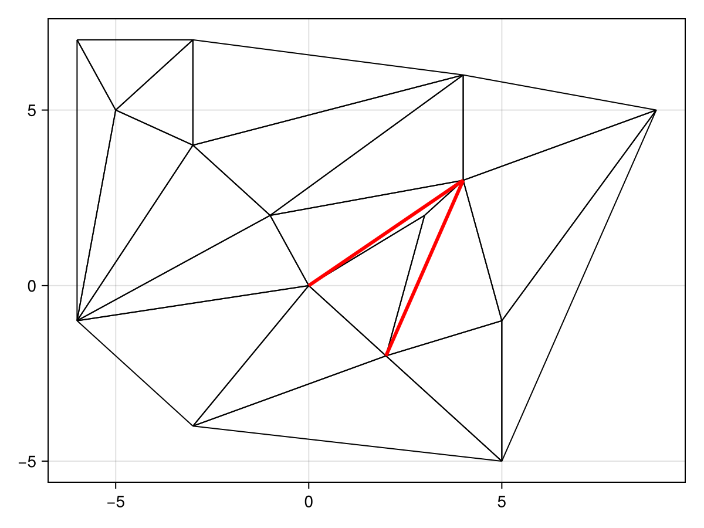

Triangulation Operations
Legalising an Edge
One important procedure, used for example in the paper Randomized Incremental Construction of Delaunay and Voronoi Diagrams by Guibas et al., 1992 (which is also the algorithm discussed by de Berg et al. in the book Computational Geometry: Algorithms and Applications (3 ed., 2008)), is the legalising of an edge. This isn't used anywhere in the package directly, but perhaps you might need it (for example, to implement the above algorithm). The idea is that we may sometimes have edges that are not Delaunay, meaning illegal, and we want to somehow fix them to be Delaunay, which may also require fixes to nearby edges after fixing the initial edge. In this way, we are legalising the edge. (The edge $e_{ij}$ is illegal if the circle through $p_i$, $p_j$, and $p_k$ contains $p_r$ in its interior, where $p_k$ and $p_r$ are the other points on the triangles adjoining $e_{ij}$.)
We provide a function legalise_edge! for this procedure, and the function assumes that there is a point r that has been inserted inside some triangle (i, j, k); the legality of an edge is checked using DelaunayTriangulation.is_legal. The function then helps to restore the Delaunay property of the triangulation following such an insertion; this is the main step of the algorithm of Guibas et al. (1992) above.
We use this tutorial to demonstrate how this can be used. First, let us define some initial triangulation.
using DelaunayTriangulation
using CairoMakie
points = [
(-1.0, 2.0), (4.0, 6.0), (4.0, 3.0), (-3.0, 7.0),
(-6.0, -1.0), (9.0, 5.0), (5.0, -5.0), (-6.0, 7.0),
(0.0, 0.0), (-3.0, 4.0), (-5.0, 5.0), (-3.0, -4.0),
(5.0, -1.0), (2.0, -2.0),
]
p = (3.0, 2.0)
tri = triangulate(points)
fig, ax, sc = triplot(tri)
scatter!(ax, [p], markersize = 14)
figThe blue point is the point to be added. It is inside the triangle (9, 14, 3). To insert it, follow Guibas et al. (1992) and connect the edges of (9, 14, 3) to the new point. This is done using split_triangle!. (Note: the function DelaunayTriangulation.complete_split_triangle_and_legalise! does the splitting and the legalising all in the same step, but we do not demonstrate this here.)
push!(points, p)
r = length(points)
i, j, k = 9, 14, 3
split_triangle!(tri, i, j, k, r)
fig, ax, sc = triplot(tri)
figThis splitting introduces some new illegal edges, shown in red below.
To fix this, we use legalise_edge!. This functions take in a single edge, so to legalise all the new edges we apply the function to each edge of the triangle that the point resides in. (The function DelaunayTriangulation.legalise_split_triangle! also performs these three calls below.)
legalise_edge!(tri, i, j, r)
legalise_edge!(tri, j, k, r)
legalise_edge!(tri, k, i, r)
fig, ax, sc = triplot(tri)
figThe triangulation is now Delaunay, and there are no more illegal edges.
Just the code
An uncommented version of this example is given below. You can view the source code for this file here.
using DelaunayTriangulation
using CairoMakie
points = [
(-1.0, 2.0), (4.0, 6.0), (4.0, 3.0), (-3.0, 7.0),
(-6.0, -1.0), (9.0, 5.0), (5.0, -5.0), (-6.0, 7.0),
(0.0, 0.0), (-3.0, 4.0), (-5.0, 5.0), (-3.0, -4.0),
(5.0, -1.0), (2.0, -2.0),
]
p = (3.0, 2.0)
tri = triangulate(points)
fig, ax, sc = triplot(tri)
scatter!(ax, [p], markersize = 14)
fig
push!(points, p)
r = length(points)
i, j, k = 9, 14, 3
split_triangle!(tri, i, j, k, r)
fig, ax, sc = triplot(tri)
fig
legalise_edge!(tri, i, j, r)
legalise_edge!(tri, j, k, r)
legalise_edge!(tri, k, i, r)
fig, ax, sc = triplot(tri)
figThis page was generated using Literate.jl.